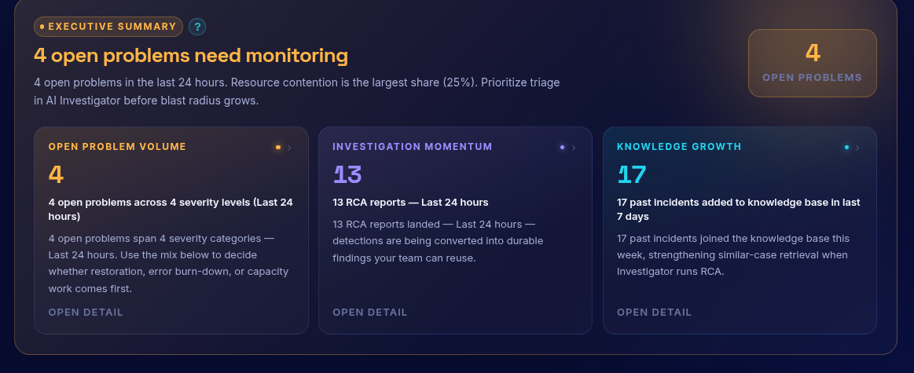
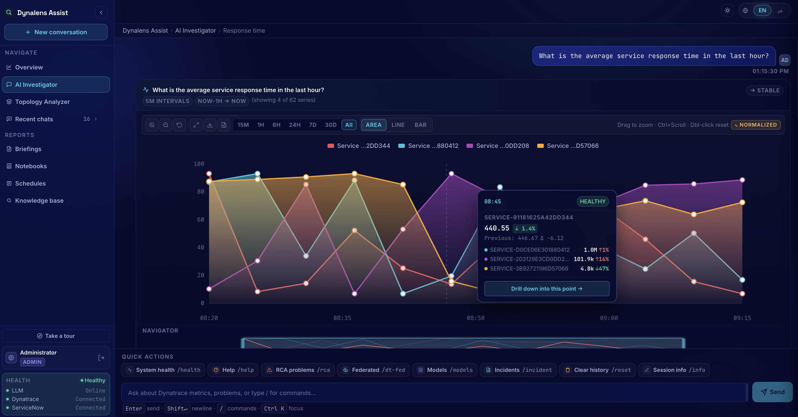
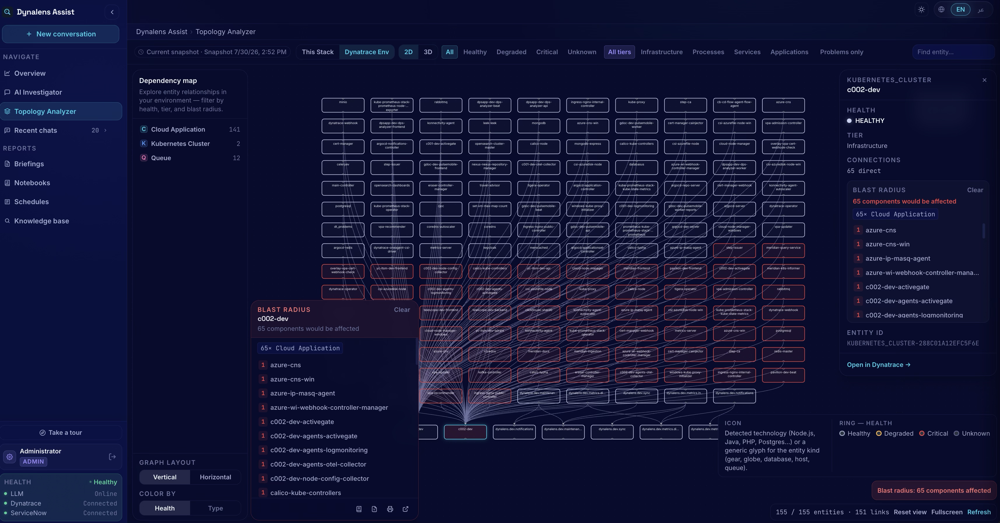
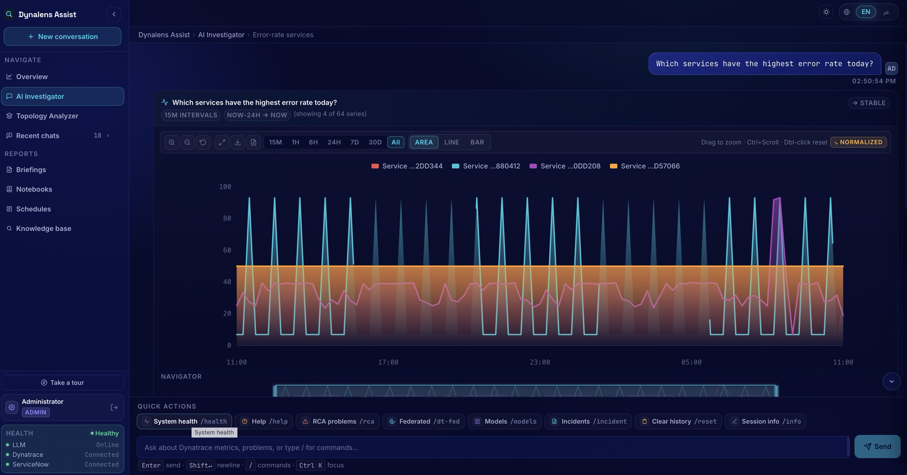
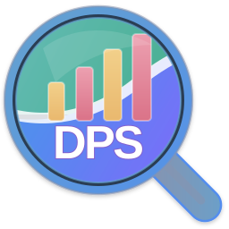

Recognised by Dynatrace


Assist answers observability questions in plain English, grounded in your live Dynatrace environment — in Microsoft Teams or a dedicated web UI, with the LLM running entirely on your premises.


Drag to reveal the reasoning behind every answer.
The answers are all in Dynatrace — but they're locked behind DQL and dashboard fluency. So the same two people field every "what's going on with X?" question, incident investigations start from a blank page every time, and the knowledge from past incidents lives in people's heads, not in the tooling.
Assist opens that knowledge to everyone: ask your environment a question in plain English and get a grounded answer — in Teams or the web UI. It classifies the question, plans and executes the right Dynatrace API calls, recalls similar past incidents and your own runbooks, and answers with evidence — while the LLM runs entirely on your premises.


A full walkthrough, plus short focused clips of each key workflow.
"Show open problems." "Error rate last hour." Assist classifies the question, plans the Dynatrace API calls, executes them, and formats the answer — with interactive charts in the web UI.
Enriches a Dynatrace problem with topology, deployments, logs, and traces in parallel, recalls the most similar past incidents, and produces an executive-style report with ranked, evidence-cited hypotheses.
A live, Smartscape-style 3D map of your Dynatrace entities — explore services, hosts, and dependencies visually instead of through query results.
LLM-generated operational summaries over any time window, exportable to PDF and deliverable on a schedule by email — your weekly ops review, written for you.
Upload runbooks, SOPs, and postmortems — answers get grounded in your own documentation, and every RCA builds an incident memory the next one learns from.
A Microsoft Teams bot with slash commands, plus a dedicated web UI for on-prem deployments — with viewer, SRE, and admin roles mapped from your directory.
A plain-English question in Teams or the web UI. Intent classification routes it to the right pipeline — live query, root-cause analysis, or knowledge-base chat.
Assist plans and executes the right Dynatrace API calls, and pulls in your runbooks and similar past incidents — so the answer comes from your environment, not the model's imagination.
A formatted, evidence-backed reply — charted metrics, an RCA report, or a briefing — with every LLM call passing through an audited security gateway.
Assist is built for on-prem and air-gapped deployments — the LLM runs locally, Dynatrace access is read-only by design, and every LLM call passes through a single audited gateway.
On-prem by design. LLM inference runs locally — no observability data or prompts sent to external AI services.
Gated & audited. Injection scanning, PII redaction, and audit logging on every LLM call — to file and database.
Role-based access. Viewer, SRE, and admin roles mapped from your directory — sensitive actions gated per role.
Free trial in minutes, or talk to us about a pilot in your environment.

Attribute, optimise, and control your Dynatrace DPS spend.
Plain-language incident summaries from your Dynatrace problem feed.
Close the loop between Dynatrace and your ITSM stack — automatically.
Business-service views built on top of Smartscape topology.